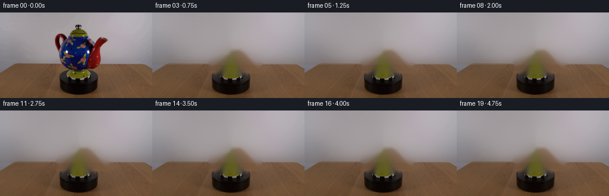
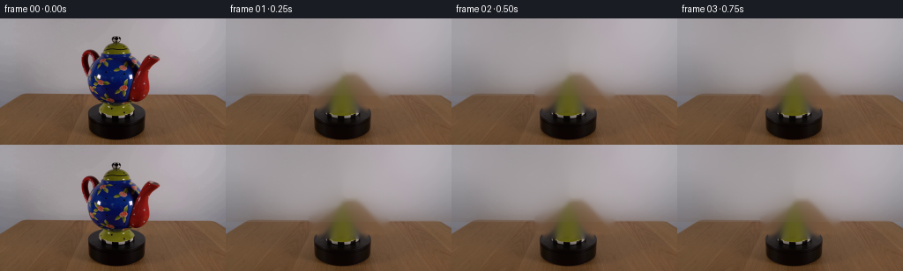
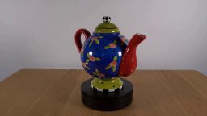
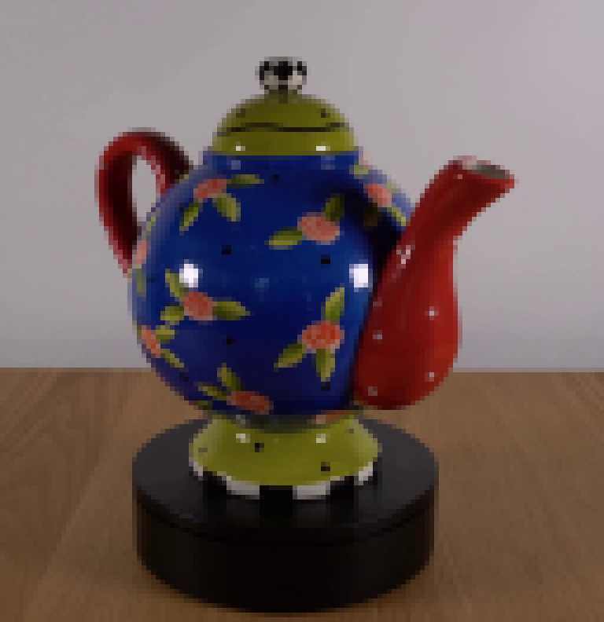
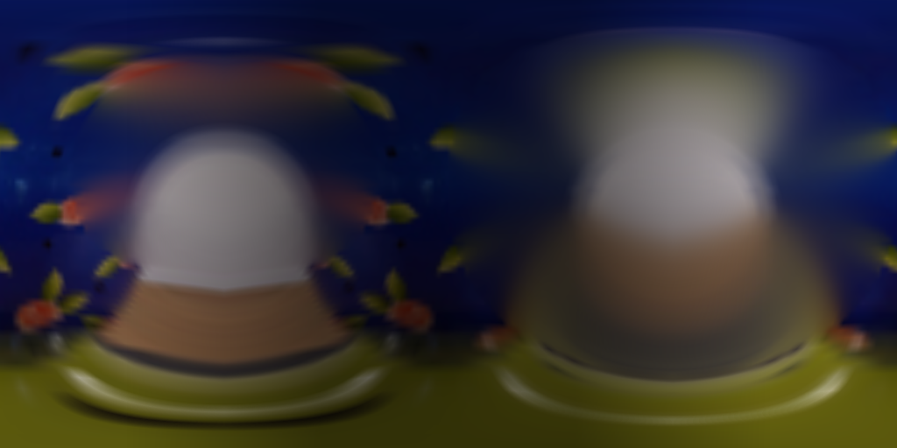
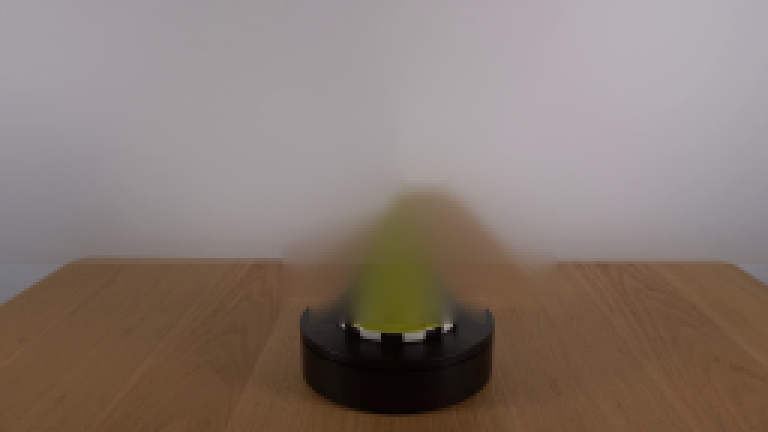
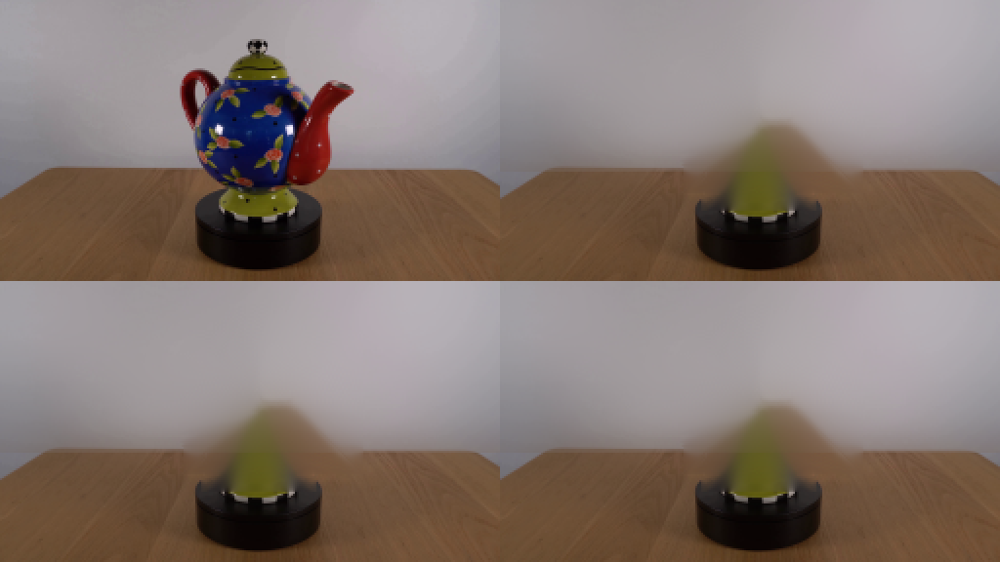
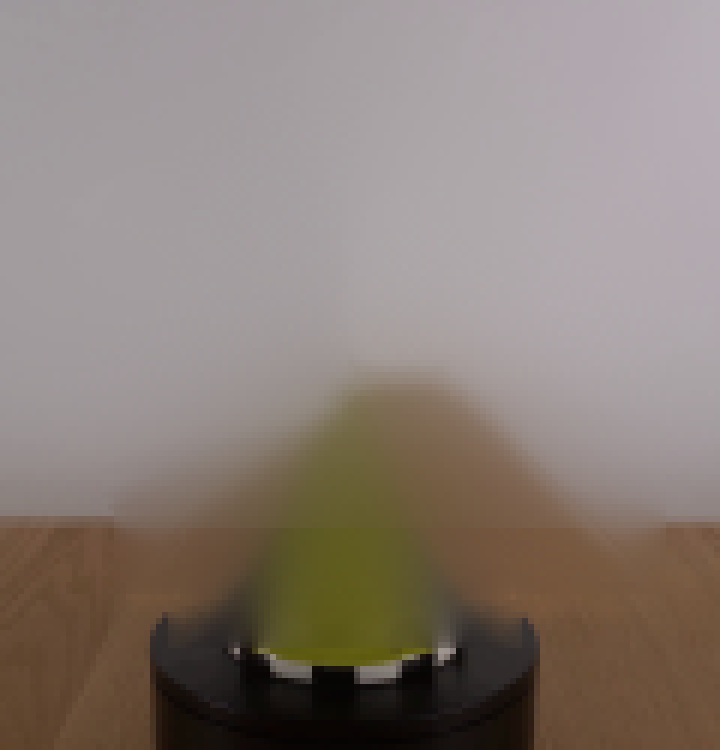

CODING AGENTS AS PIXEL WORLD MODELS
traex/DeepSeek-V4.1-Flash · 0176
点击播放 · 原生 RGB 像素
逐轮保存的候选
回放视频、检查图与代码变化。
每份候选均可单独播放。实际图片检查记录在下方工具轨迹中。
候选 01播放与检查图
点击播放 · 原生 RGB 像素


展开代码变化
--- 上一保存版本
+++ 本次保存版本
@@ -0,0 +1,379 @@
+from pathlib import Path
+
+import cv2
+import numpy as np
+from PIL import Image
+
+import artifact_io
+
+
+ROOT = Path(__file__).resolve().parent
+WIDTH, HEIGHT, FRAME_COUNT, FPS = 256, 144, 20, 4
+
+# The photographed turntable is a little above eye level. A small downward
+# camera pitch makes the platform read as a solid disc while retaining the
+# near-elevation view of the teapot.
+CAM_DEPTH = 300.0
+CAM_PITCH = 0.105
+CX, CY = 132.4, 72.0
+
+# Teapot dimensions in pixels at the object plane.
+BODY_R = np.array([38.5, 30.2, 37.0], dtype=np.float32)
+BODY_C = np.array([0.0, 0.0, 0.0], dtype=np.float32)
+
+# A clockwise turn, as seen from above, advances the photographed front toward
+# image-left. Forty-five degrees is a slow, legible turntable demonstration.
+MAX_TURN = np.deg2rad(45.0)
+
+
+def make_object_mask():
+ mask = np.zeros((HEIGHT, WIDTH), dtype=np.uint8)
+ cv2.ellipse(mask, (132, 71), (39, 33), 0, 0, 360, 255, -1)
+ cv2.ellipse(mask, (132, 31), (22, 17), 0, 0, 360, 255, -1)
+ cv2.ellipse(mask, (132, 104), (27, 9), 0, 0, 360, 255, -1)
+ cv2.ellipse(mask, (102, 52), (11, 23), 0, 0, 360, 255, -1)
+ cv2.ellipse(mask, (160, 64), (24, 28), 0, 0, 360, 255, -1)
+ cv2.rectangle(mask, (96, 27), (183, 96), 255, -1)
+ return cv2.dilate(mask, np.ones((5, 5), np.uint8), iterations=1)
+
+
+def make_background(source):
+ # Remove only the photographed teapot. The black platter is retained and
+ # provides a stable physical contact surface for every rendered frame.
+ mask = make_object_mask()
+ mask[108:, :] = 0
+ plate = cv2.inpaint(source, mask, 7, cv2.INPAINT_TELEA)
+ # The inpaint radius can leave a faint vertical seam in the smooth wall;
+ # blend a low-frequency version back in outside the tabletop.
+ smooth = cv2.GaussianBlur(plate, (0, 0), 12.0)
+ wall = np.arange(HEIGHT)[:, None] < 88
+ blend = np.where(wall, 0.52, 0.10).astype(np.float32)[..., None]
+ plate = np.clip(plate * (1.0 - blend) + smooth * blend, 0, 255).astype(np.uint8)
+ return plate
+
+
+def make_body_atlas(source):
+ # Inpaint the red side fittings where they overlap the blue body. The
+ # atlas is built from the photographed front surface, then mirrored around
+ # the back so the full cylindrical wrap is continuous.
+ cleanup_mask = np.zeros((HEIGHT, WIDTH), dtype=np.uint8)
+ cv2.ellipse(cleanup_mask, (101, 53), (13, 27), 0, 0, 360, 255, -1)
+ cv2.ellipse(cleanup_mask, (162, 67), (27, 31), 0, 0, 360, 255, -1)
+ cleanup_mask = cv2.dilate(cleanup_mask, np.ones((5, 5), np.uint8), iterations=1)
+ clean = cv2.inpaint(source, cleanup_mask, 5, cv2.INPAINT_TELEA)
+
+ aw, ah = 1024, 512
+ u = (np.arange(aw, dtype=np.float32) + 0.5) / aw
+ v = (np.arange(ah, dtype=np.float32) + 0.5) / ah
+ theta = (u - 0.5) * (2.0 * np.pi)
+ phi = (v - 0.5) * np.pi
+
+ # Use the visible hemisphere for the front and its mirror for the back.
+ back = np.abs(theta) > (np.pi / 2)
+ sample_theta = theta.copy()
+ sample_theta[back] = np.pi - theta[back]
+
+ th = sample_theta[None, :]
+ ph = phi[:, None]
+ cosph = np.cos(ph)
+ sinph = np.sin(ph)
+ sx = CX + 0.978 * BODY_R[0] * cosph * np.sin(th)
+ sy = (
+ CY
+ + BODY_R[1] * sinph * np.cos(CAM_PITCH)
+ + BODY_R[2] * cosph * np.cos(th) * np.sin(CAM_PITCH)
+ )
+ atlas = cv2.remap(
+ clean,
+ sx.astype(np.float32),
+ sy.astype(np.float32),
+ cv2.INTER_LINEAR,
+ borderMode=cv2.BORDER_REFLECT_101,
+ )
+
+ # The back half is necessarily invented. Mirroring keeps the floral
+ # language continuous while a gentle cool falloff distinguishes it.
+ atlas = atlas.astype(np.float32)
+ side = np.clip(np.cos(theta)[None, :] * -0.35 + 0.78, 0.56, 1.0)
+ atlas *= side[..., None]
+ return np.clip(atlas, 0, 255).astype(np.uint8)
+
+
+def ellipsoid_sdf(p, radii):
+ scaled = p / radii
+ k0 = np.linalg.norm(scaled, axis=-1)
+ k1 = np.linalg.norm(p / (radii * radii), axis=-1)
+ return k0 * (k0 - 1.0) / np.maximum(k1, 1e-6)
+
+
+def sphere_sdf(p, center, radius):
+ return np.linalg.norm(p - center, axis=-1) - radius
+
+
+def capsule_chain_sdf(p, points, radii):
+ best = np.full(p.shape[:-1], 1e9, dtype=np.float32)
+ for a, b, ra, rb in zip(points[:-1], points[1:], radii[:-1], radii[1:]):
+ ba = b - a
+ denom = float(np.dot(ba, ba))
+ h = np.clip(np.sum((p - a) * ba, axis=-1) / denom, 0.0, 1.0)
+ center = a + h[..., None] * ba
+ r = ra + h * (rb - ra)
+ best = np.minimum(best, np.linalg.norm(p - center, axis=-1) - r)
+ return best
+
+
+def truncated_cone_sdf(p, y0, y1, r0, r1):
+ # Smooth approximation of a rounded, solid truncated cone. It is only
+ # used for ray marching, where a conservative field is sufficient.
+ radial = np.sqrt(p[..., 0] ** 2 + p[..., 2] ** 2)
+ t = np.clip((p[..., 1] - y0) / (y1 - y0), 0.0, 1.0)
+ target = r0 + (r1 - r0) * t
+ side = np.abs(radial - target)
+ axis_y = y0 + t * (y1 - y0)
+ cap = np.maximum(np.abs(p[..., 1] - axis_y) - 0.6, 0.0)
+ return np.sqrt(side * side + cap * cap) - 1.0
+
+
+def make_parts():
+ handle_points = np.array(
+ [
+ [-35.0, -24.0, 2.0],
+ [-42.5, -18.0, 3.5],
+ [-48.0, -7.0, 3.0],
+ [-46.0, 4.0, 1.5],
+ [-37.0, 9.0, -1.0],
+ ],
+ dtype=np.float32,
+ )
+ handle_radii = np.array([5.4, 5.2, 4.8, 4.8, 4.5], dtype=np.float32)
+
+ spout_points = np.array(
+ [
+ [29.0, -3.0, 18.0],
+ [34.0, -12.0, 23.0],
+ [41.0, -22.0, 26.0],
+ [47.0, -31.0, 24.0],
+ ],
+ dtype=np.float32,
+ )
+ spout_radii = np.array([10.5, 9.0, 7.0, 4.6], dtype=np.float32)
+ return handle_points, handle_radii, spout_points, spout_radii
+
+
+HANDLE_POINTS, HANDLE_RADII, SPOUT_POINTS, SPOUT_RADII = make_parts()
+
+
+def rotate_local(p, angle):
+ c, s = np.cos(angle), np.sin(angle)
+ x = c * p[..., 0] + s * p[..., 2]
+ z = -s * p[..., 0] + c * p[..., 2]
+ return np.stack((x, p[..., 1], z), axis=-1)
+
+
+def scene_sdf(p, angle):
+ q = rotate_local(p, angle)
+ body = ellipsoid_sdf(q - BODY_C, BODY_R)
+ lid = truncated_cone_sdf(q, -45.0, -29.5, 12.0, 18.5)
+ foot = truncated_cone_sdf(q, 27.0, 36.0, 20.0, 24.5)
+ knob = sphere_sdf(q, np.array([0.0, -51.0, 0.0], np.float32), 4.5)
+ handle = capsule_chain_sdf(q, HANDLE_POINTS, HANDLE_RADII)
+ spout = capsule_chain_sdf(q, SPOUT_POINTS, SPOUT_RADII)
+ return np.minimum.reduce((body, lid, foot, knob, handle, spout))
+
+
+def component_ids(p, angle):
+ q = rotate_local(p, angle)
+ values = np.stack(
+ (
+ ellipsoid_sdf(q - BODY_C, BODY_R),
+ truncated_cone_sdf(q, -45.0, -29.5, 12.0, 18.5),
+ truncated_cone_sdf(q, 27.0, 36.0, 20.0, 24.5),
+ sphere_sdf(q, np.array([0.0, -51.0, 0.0], np.float32), 4.5),
+ capsule_chain_sdf(q, HANDLE_POINTS, HANDLE_RADII),
+ capsule_chain_sdf(q, SPOUT_POINTS, SPOUT_RADII),
+ ),
+ axis=-1,
+ )
+ return np.argmin(values, axis=-1), q
+
+
+def bilinear_sample(image, u, v):
+ h, w = image.shape[:2]
+ x = np.clip(u * (w - 1), 0, w - 1)
+ y = np.clip(v * (h - 1), 0, h - 1)
+ x0 = np.floor(x).astype(np.int32)
+ y0 = np.floor(y).astype(np.int32)
+ x1 = np.minimum(x0 + 1, w - 1)
+ y1 = np.minimum(y0 + 1, h - 1)
+ fx = (x - x0)[..., None]
+ fy = (y - y0)[..., None]
+ a = image[y0, x0].astype(np.float32)
+ b = image[y0, x1].astype(np.float32)
+ c = image[y1, x0].astype(np.float32)
+ d = image[y1, x1].astype(np.float32)
+ return (a * (1 - fx) + b * fx) * (1 - fy) + (c * (1 - fx) + d * fx) * fy
+
+
+def surface_normal(p, angle, eps=0.22):
+ ex = np.array([eps, 0.0, 0.0], np.float32)
+ ey = np.array([0.0, eps, 0.0], np.float32)
+ ez = np.array([0.0, 0.0, eps], np.float32)
+ nx = scene_sdf(p + ex, angle) - scene_sdf(p - ex, angle)
+ ny = scene_sdf(p + ey, angle) - scene_sdf(p - ey, angle)
+ nz = scene_sdf(p + ez, angle) - scene_sdf(p - ez, angle)
+ n = np.stack((nx, ny, nz), axis=-1)
+ return n / np.maximum(np.linalg.norm(n, axis=-1, keepdims=True), 1e-6)
+
+
+def paint_surface(q, material, atlas, normals, ray_dir):
+ count = q.shape[0]
+ rgb = np.zeros((count, 3), dtype=np.float32)
+
+ body_ids = np.flatnonzero(material == 0)
+ if body_ids.size:
+ qb = q[body_ids]
+ phi = np.arcsin(np.clip(qb[:, 1] / BODY_R[1], -0.995, 0.995))
+ theta = np.arctan2(qb[:, 0] / BODY_R[0], qb[:, 2] / BODY_R[2])
+ u = (theta + np.pi) / (2.0 * np.pi)
+ v = (phi + np.pi / 2.0) / np.pi
+ rgb[body_ids] = bilinear_sample(atlas, u, v)
+
+ green_ids = np.flatnonzero((material == 1) | (material == 2))
+ if green_ids.size:
+ qg = q[green_ids]
+ y = qg[:, 1]
+ ang = np.arctan2(qg[:, 0], qg[:, 2])
+ green = np.array([92.0, 104.0, 12.0], np.float32)
+ stripe = 0.84 + 0.16 * np.sin(y * 1.55 + 0.4)
+ flower = (
+ np.sin(ang * 5.0 + y * 0.12) * np.sin(y * 0.86 - 0.3) > 0.83
+ )
+ green_rgb = green[None, :] * stripe[:, None]
+ green_rgb[flower] = np.array([150.0, 38.0, 30.0], np.float32)
+ rgb[green_ids] = green_rgb
+
+ knob_ids = np.flatnonzero(material == 3)
+ if knob_ids.size:
+ qk = q[knob_ids]
+ checker = (
+ np.floor((np.arctan2(qk[:, 0], qk[:, 2]) + np.pi) * 5.0)
+ + np.floor((qk[:, 1] + 55.0) * 1.2)
+ ) % 2
+ rgb[knob_ids] = np.where(
+ checker[:, None] > 0,
+ np.array([18.0, 18.0, 18.0], np.float32),
+ np.array([218.0, 214.0, 206.0], np.float32),
+ )
+
+ red_ids = np.flatnonzero((material == 4) | (material == 5))
+ if red_ids.size:
+ qr = q[red_ids]
+ # Sparse painted white dots on the glossy red fittings.
+ dots = (
+ np.sin(qr[:, 0] * 1.35 + qr[:, 1] * 0.78)
+ * np.sin(qr[:, 2] * 1.42 - qr[:, 1] * 0.53)
+ ) > 0.91
+ red = np.array([154.0, 18.0, 14.0], np.float32)
+ red_rgb = red[None, :] * (0.82 + 0.22 * np.sin(qr[:, 1] * 0.7 + 1.1))[:, None]
+ red_rgb[dots] = np.array([229.0, 216.0, 203.0], np.float32)
+ rgb[red_ids] = red_rgb
+
+ # Conservative relighting preserves the photographed paint while making
+ # the highlight respond as the fittings swing through depth.
+ light = np.array([-0.46, -0.58, 0.67], np.float32)
+ light /= np.linalg.norm(light)
+ view = -ray_dir
+ half = light + view
+ half /= np.linalg.norm(half)
+ diffuse = np.clip(np.sum(normals * light, axis=-1), 0.0, 1.0)
+ spec = np.clip(np.sum(normals * half, axis=-1), 0.0, 1.0) ** 24
+ shade = 0.90 + 0.13 * diffuse
+ rgb *= shade[:, None]
+ rgb += (spec * 28.0)[:, None] * np.array([1.0, 0.93, 0.82], np.float32)
+ return np.clip(rgb, 0, 255)
+
+
+def render_teapot(angle, atlas, supersample=3):
+ x0, x1, y0, y1 = 82, 188, 8, 116
+ sw, sh = (x1 - x0) * supersample, (y1 - y0) * supersample
+ jj, ii = np.meshgrid(np.arange(sw), np.arange(sh))
+ xs = x0 + (jj + 0.5) / supersample
+ ys = y0 + (ii + 0.5) / supersample
+ dx = (xs - CX).ravel().astype(np.float32)
+ dy = (ys - CY).ravel().astype(np.float32)
+
+ cp, sp = np.cos(CAM_PITCH), np.sin(CAM_PITCH)
+ origin = np.stack(
+ (
+ dx,
+ dy * cp + CAM_DEPTH * sp,
+ dy * sp - CAM_DEPTH * cp,
+ ),
+ axis=-1,
+ ).astype(np.float32)
+ direction = np.array([0.0, sp, -cp], np.float32)
+ direction /= np.linalg.norm(direction)
+
+ t = np.full(dx.shape, 240.0, np.float32)
+ hit = np.zeros(dx.shape, dtype=bool)
+ for _ in range(150):
+ p = origin + t[:, None] * direction
+ d = scene_sdf(p, angle)
+ active = (~hit) & (t < 365.0)
+ newly_hit = active & (d < 0.12)
+ hit |= newly_hit
+ step = np.maximum(0.34, 0.82 * d)
+ t[active] = t[active] + step[active]
+ if np.all(hit | (t >= 365.0)):
+ break
+
+ rgba = np.zeros((sh * sw, 4), dtype=np.float32)
+ ids = np.flatnonzero(hit)
+ if ids.size:
+ p = origin[ids] + t[ids, None] * direction
+ material, q = component_ids(p, angle)
+ normals = surface_normal(p, angle)
+ rgba[ids, :3] = paint_surface(
+ q, material, atlas, normals, np.broadcast_to(direction, p.shape)
+ )
+ rgba[ids, 3] = 1.0
+
+ rgba = rgba.reshape(sh, sw, 4)
+ alpha = rgba[..., 3:4]
+ premult = rgba[..., :3] * alpha
+ small_alpha = cv2.resize(
+ alpha[..., 0], (x1 - x0, y1 - y0), interpolation=cv2.INTER_AREA
+ )
+ small_rgb = cv2.resize(premult, (x1 - x0, y1 - y0), interpolation=cv2.INTER_AREA)
+ small_rgb = small_rgb / np.maximum(small_alpha, 1e-5)[..., None]
+ return small_rgb, np.clip(small_alpha, 0, 1), (x0, y0, x1, y1)
+
+
+def composite(background, angle, atlas):
+ rgb, alpha, (x0, y0, x1, y1) = render_teapot(angle, atlas)
+ out = background.astype(np.float32)
+ roi = out[y0:y1, x0:x1]
+ a = alpha[..., None]
+ roi[:] = rgb * a + roi * (1.0 - a)
+ return np.clip(out, 0, 255).astype(np.uint8)
+
+
+def main():
+ source = np.array(Image.open(ROOT / "first_frame.png").convert("RGB"))
+ background = make_background(source)
+ atlas = make_body_atlas(source)
+
+ frames = np.empty((FRAME_COUNT, HEIGHT, WIDTH, 3), dtype=np.uint8)
+ frames[0] = source
+ for index in range(1, FRAME_COUNT):
+ # Ease in from rest so the turntable starts naturally.
+ progress = index / (FRAME_COUNT - 1)
+ eased = progress * progress * (3.0 - 2.0 * progress)
+ angle = MAX_TURN * eased
+ frames[index] = composite(background, angle, atlas)
+
+ artifact_io.save(frames, ROOT)
+
+
+if __name__ == "__main__":
+ main()
可观测工具轨迹
实际执行的命令与返回图片。
命令 1exit 0
/bin/bash -c "sed -n '1,240p' prompt.txt"
命令 2exit 0
/bin/bash -c "pwd && rg --files -g '"'!**/.git/**'"' | sed -n '1,160p'"
命令 3exit 0
/bin/bash -c "sed -n '1,280p' GENERATION_RULES.md"
命令 4exit 0
/bin/bash -c "find . -maxdepth 2 -type f -printf '%p %s bytes\\n' | sort"
命令 5exit 0
/bin/bash -c "sed -n '1,260p' artifact_io.py"
命令 6exit 0
/bin/bash -c "python - <<'PY'
from PIL import Image
im=Image.open('first_frame.png')
print(im.mode, im.size)
print(im.getpixel((0,0)), im.getpixel((128,72)))
PY"命令 7exit 0
/bin/bash -c "python - <<'PY' import sys print(sys.version) for m in ['numpy','PIL','scipy','cv2','skimage','matplotlib']: try: mod=__import__(m) print(m, getattr(mod,'__version__','ok')) except Exception as e: print(m,'MISSING',e) PY"
命令 8exit 0
/bin/bash -c "python - <<'PY'
from PIL import Image
im=Image.open('first_frame.png')
im.resize((1024,576),Image.Resampling.NEAREST).save('.tmp/first_frame_4x.png')
im.crop((72,8,200,140)).resize((768,792),Image.Resampling.NEAREST).save('.tmp/object_crop_6x.png')
PY"命令 9exit 0
/bin/bash -c "python - <<'PY'
import numpy as np
from PIL import Image
im=np.array(Image.open('first_frame.png'))
# print coarse color stats in object region
for y in range(0,144,8):
print(f'{y:3d}', ' '.join('%02x%02x%02x'%tuple(im[y,x]) for x in range(64,208,8)))
PY"命令 10exit 0
/bin/bash -c "python - <<'PY'
import cv2, numpy as np
from PIL import Image
im=np.array(Image.open('first_frame.png'))
r,g,b=[im[:,:,i].astype(int) for i in range(3)]
red=(r>70)&(r>g*1.55)&(r>b*1.55)
mask=np.zeros(red.shape,np.uint8); mask[24:92,88:194]=red[24:92,88:194]
n,lab,stats,cent=cv2.connectedComponentsWithStats(mask,8)
for i in range(1,n):
x,y,w,h,a=stats[i]
if a>=4: print(i, 'xywh',x,y,w,h,'area',a,'cent',cent[i])
PY"命令 11exit 1
/bin/bash -c 'MPLCONFIGDIR=.tmp/mpl python generate.py'
命令 12exit 1
/bin/bash -c 'MPLCONFIGDIR=.tmp/mpl python generate.py'
命令 13exit 0
/bin/bash -c "nl -ba generate.py | sed -n '330,365p'"
命令 14exit 0
/bin/bash -c 'MPLCONFIGDIR=.tmp/mpl python generate.py'
命令 15exit 0
/bin/bash -c "python - <<'PY'
import numpy as np
from PIL import Image
import generate as g
src=np.array(Image.open('first_frame.png').convert('RGB'))
bg=g.make_background(src)
at=g.make_body_atlas(src)
Image.fromarray(bg).resize((768,432),Image.Resampling.NEAREST).save('.tmp/background.png')
Image.fromarray(at).save('.tmp/atlas.png')
# diagnostic mid-angle rgb/alpha
rgb,a,box=g.render_teapot(np.deg2rad(25),at)
Image.fromarray(np.clip(rgb,0,255).astype(np.uint8)).resize((636,648),Image.Resampling.NEAREST).save('.tmp/render25.png')
Image.fromarray((a*255).astype(np.uint8)).resize((636,648),Image.Resampling.NEAREST).save('.tmp/alpha25.png')
PY"命令 16exit 0
/bin/bash -c "python - <<'PY'
from PIL import Image, ImageDraw
ims=[Image.open('first_frame.png'),Image.open('frames/01.png'),Image.open('frames/10.png'),Image.open('frames/19.png')]
out=Image.new('RGB',(512,288),(20,20,20))
for i,im in enumerate(ims):
out.paste(im.resize((256,144),Image.Resampling.NEAREST),((i%2)*256,(i//2)*144))
out.resize((1024,576),Image.Resampling.NEAREST).save('.tmp/four_frames.png')
PY"命令 17exit 0
/bin/bash -c "python - <<'PY'
from PIL import Image
for i in [0,5,10,15,19]:
im=Image.open(f'frames/{i:02d}.png')
im.crop((75,0,195,125)).resize((720,750),Image.Resampling.NEAREST).save(f'.tmp/crop{i:02d}.png')
PY"命令 18exit 0
/bin/bash -c "python - <<'PY'
from PIL import Image
import numpy as np
for i in [0,10,19]:
a=np.array(Image.open(f'frames/{i:02d}.png'))
print(i, [(x,y,tuple(a[y,x])) for x,y in [(130,70),(130,50),(120,60),(140,75),(110,70),(150,80)]])
PY"命令 19exit 0
/bin/bash -c "python - <<'PY'
from PIL import Image
im=Image.open('frames/10.png')
im.resize((1024,576),Image.Resampling.NEAREST).save('.tmp/f10_4x.png')
PY"命令 20exit 0
/bin/bash -c "nl -ba generate.py | sed -n '255,330p'"
命令 21exit 0
/bin/bash -c "python - <<'PY'
import numpy as np, generate as g
from PIL import Image
at=g.make_body_atlas(np.array(Image.open('first_frame.png')))
# compute hits only through render internals by patching material? print hit count
for deg in [0,15,30,45]:
rgb,a,b=g.render_teapot(np.deg2rad(deg),at,supersample=1)
print(deg,'alpha sum',a.sum(),'mean rgb',rgb[a>.5].mean(0) if (a>.5).any() else None,'minmax',rgb.min(),rgb.max())
PY"命令 22exit 0
/bin/bash -c "python - <<'PY'
import numpy as np, generate as g
angle=0.5
x0,x1,y0,y1=82,188,8,116
for ss in [1]:
jj,ii=np.meshgrid(np.arange((x1-x0)*ss),np.arange((y1-y0)*ss))
xs=x0+(jj+.5)/ss; ys=y0+(ii+.5)/ss
dx=(xs-g.CX).ravel().astype(np.float32);dy=(ys-g.CY).ravel().astype(np.float32)
cp,sp=np.cos(g.CAM_PITCH),np.sin(g.CAM_PITCH)
origin=np.stack((dx,dy*cp+g.CAM_DEPTH*sp,dy*sp-g.CAM_DEPTH*cp),-1).astype(np.float32)
direction=np.array([0,g.CAM_PITCH,-1],np.float32); direction/=np.linalg.norm(direction)
t=np.full(dx.shape,240,np.float32)
for j in range(150):
p=origin+t[:,None]*direction
d=g.scene_sdf(p,angle)
if j in [0,1,10,50,149]: print(j, d.min(),d.max(),np.sum(d<0), t.min(),t.max())
t=t+np.maximum(.34,.82*d)
print('hit',np.sum(g.scene_sdf(origin+t[:,None]*direction,angle)<.12))
PY"命令 23exit 0
/bin/bash -c "python - <<'PY'
import numpy as np, generate as g
p=np.zeros((3,3),np.float32)
print('ell',g.ellipsoid_sdf(p,g.BODY_R))
print('lid',g.truncated_cone_sdf(p,-45,-29.5,12,18.5))
print('scene',g.scene_sdf(p,.5))
# inspect functions
PY"命令 24exit 0
/bin/bash -c "python - <<'PY' import numpy as np, generate as g for z in [-50,-30,0,30,50]: p=np.array([[0,0,z]],np.float32) print(z,g.scene_sdf(p,0)) PY"
命令 25exit 0
/bin/bash -c "python - <<'PY'
import numpy as np, generate as g
angle=.5
x0,x1,y0,y1=82,188,8,116
jj,ii=np.meshgrid(np.arange(x1-x0),np.arange(y1-y0))
xs=x0+(jj+.5); ys=y0+(ii+.5)
dx=(xs-g.CX).ravel().astype(np.float32);dy=(ys-g.CY).ravel().astype(np.float32)
cp,sp=np.cos(g.CAM_PITCH),np.sin(g.CAM_PITCH)
origin=np.stack((dx,dy*cp+g.CAM_DEPTH*sp,dy*sp-g.CAM_DEPTH*cp),-1).astype(np.float32)
direction=np.array([0,g.CAM_PITCH,-1],np.float32); direction/=np.linalg.norm(direction)
p=origin+240*direction
print('origin center',origin[len(origin)//2], 'p',p[len(p)//2])
print('d center',g.scene_sdf(p,angle)[len(p)//2])
print('d minmax',g.scene_sdf(p,angle).min(),g.scene_sdf(p,angle).max())
PY"命令 26exit 0
/bin/bash -c "python - <<'PY' import numpy as np R=np.array([38.5,30.2,37.0]);p=np.array([-50,47,-238]);s=p/R;k0=np.linalg.norm(s);k1=np.linalg.norm(p/(R*R));print(s,k0,k1,k0*(k0-1)/k1) PY"
命令 27exit 0
/bin/bash -c "python - <<'PY' import numpy as np R=np.array([38.5,30.2,37.0]);p=np.array([-50,47,-238]);s=p/R;k0=np.linalg.norm(s);k1=np.linalg.norm(p/(R*R));print(k0*(k0-1)/max(k1,1e-6)) p=np.array([0,0,0]);s=p/R;k0=np.linalg.norm(s);k1=np.linalg.norm(p/(R*R));print(k0*(k0-1)/max(k1,1e-6)) p=np.array([0,0,37]);s=p/R;k0=np.linalg.norm(s);k1=np.linalg.norm(p/(R*R));print(k0,k1,k0*(k0-1)/k1) PY"
命令 28exit 0
/bin/bash -c "python - <<'PY'
import numpy as np, generate as g
for y in [-40,-20,0,20]:
p=np.array([[0,y,0]],np.float32)
print('y',y,'ell',g.ellipsoid_sdf(p,g.BODY_R),'scene',g.scene_sdf(p,.3))
PY"命令 29exit 0
/bin/bash -c "python - <<'PY' import numpy as np, generate as g for z in [-300,-250,-100,-50,-30,0,30,50,100,250,300]: p=np.array([[0,0,z]],np.float32) print(z,'rot',g.rotate_local(p,.5),'ell',g.ellipsoid_sdf(g.rotate_local(p,.5),g.BODY_R),'scene',g.scene_sdf(p,.5)) PY"
命令 30exit 0
/bin/bash -c "python - <<'PY'
import numpy as np, generate as g
for y in [0,20,47]:
p=np.array([[0,y,-238]],np.float32)
print('y',y,'rot',g.rotate_local(p,.5),'ell',g.ellipsoid_sdf(g.rotate_local(p,.5),g.BODY_R),'scene',g.scene_sdf(p,.5))
PY"命令 31exit 0
/bin/bash -c "python - <<'PY' import numpy as np, generate as g p=np.array([[0,0,-238]],np.float32) q=g.rotate_local(p,.5) print(q) s=q/g.BODY_R print(s, np.linalg.norm(s), np.linalg.norm(q/(g.BODY_R*g.BODY_R))) print(g.ellipsoid_sdf(q,g.BODY_R)) PY"
命令 32exit 0
/bin/bash -c "python - <<'PY'
import numpy as np, generate as g
angle=.5;x0,x1,y0,y1=82,188,8,116
jj,ii=np.meshgrid(np.arange(x1-x0),np.arange(y1-y0));xs=x0+(jj+.5);ys=y0+(ii+.5)
dx=(xs-g.CX).ravel().astype(np.float32);dy=(ys-g.CY).ravel().astype(np.float32)
cp,sp=np.cos(g.CAM_PITCH),np.sin(g.CAM_PITCH)
origin=np.stack((dx,dy*cp+g.CAM_DEPTH*sp,dy*sp-g.CAM_DEPTH*cp),-1).astype(np.float32)
direction=np.array([0,g.CAM_PITCH,-1],np.float32);direction/=np.linalg.norm(direction)
print('center origin',origin[(54*106+53)])
for t in [100,150,200,238,240,250,300,350]:
p=origin+ t*direction
print(t,'d center',g.scene_sdf(p,angle)[54*106+53], 'd min',g.scene_sdf(p,angle).min())
PY"命令 33exit 0
/bin/bash -c "python - <<'PY'
import numpy as np, generate as g
p=np.array([3.1,21.99447,-299.34344],np.float32)
print('rot',g.rotate_local(p,.5))
q=g.rotate_local(p,.5)
print('ell direct',g.ellipsoid_sdf(q[None],g.BODY_R))
print('scene',g.scene_sdf(p[None],.5))
print('p/R',q/g.BODY_R)
PY"命令 34exit 0
/bin/bash -c "python - <<'PY' import numpy as np, generate as g angle=.5 x0,x1,y0,y1=82,188,8,116 jj,ii=np.meshgrid(np.arange(x1-x0),np.arange(y1-y0));xs=x0+(jj+.5);ys=y0+(ii+.5) dx=(xs-g.CX).ravel().astype(np.float32);dy=(ys-g.CY).ravel().astype(np.float32) cp,sp=np.cos(g.CAM_PITCH),np.sin(g.CAM_PITCH) origin=np.stack((dx,dy*cp+g.CAM_DEPTH*sp,dy*sp-g.CAM_DEPTH*cp),-1).astype(np.float32) direction=np.array([0,g.CAM_PITCH,-1],np.float32);direction/=np.linalg.norm(direction) t=np.full(dx.shape,240,np.float32) for j in range(20): p=origin+t[:,None]*direction;d=g.scene_sdf(p,angle);active=t<365 print(j, 'dcenter',d[54*106+53], 'dmin',d.min(),'tcenter',t[54*106+53]) t[active]=t[active]+np.maximum(.34,.82*d[active]) PY"
视觉工具实际返回图片 1

视觉工具实际返回图片 2

视觉工具实际返回图片 3

视觉工具实际返回图片 4
视觉工具实际返回图片 5

视觉工具实际返回图片 6

视觉工具实际返回图片 7

视觉工具实际返回图片 8

视觉工具实际返回图片 9
保存候选 1 份；完成命令 34 次；可验证图片返回 9 张。原始 API 响应与完整日志保留在本地。